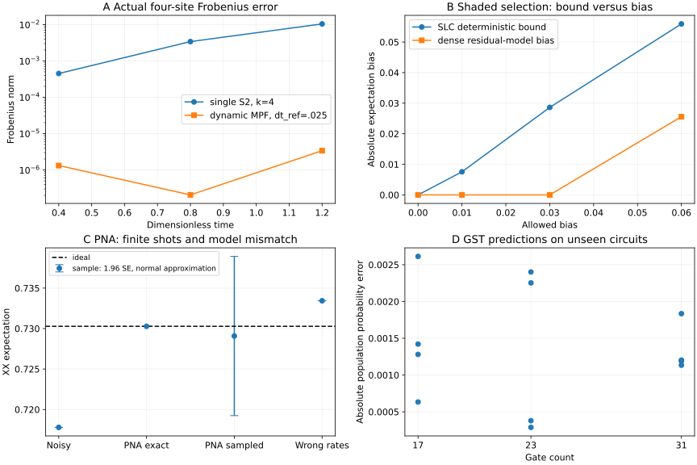

完整 SDK 实验册：从安装包到可核验输出
隔离环境实跑原始基线：2026-10-13（各项目真实安装版本、原始计数与日志均保留采集原貌）；全书 31 项目总账与条目同步更新于 2026-11-25。
本页把全书 26 篇正文中的算法、模拟、纠错、控制与系统工具连接到真实开源软件包的端到端本地运行。所有软件包均在各自独立的虚拟环境或 C/C++ 编译环境中安装并实际执行，输出结果与明示解析式、独立矩阵演算或严格物理不变量逐项核对。程序总入口与环境说明与进阶集成环境说明保留完整依赖锁、运行命令与日志；codes/vendor/ 下归档的 31 个开源项目、122 份固定提交源码均保持原字节与校验哈希不变，不通过删改 import 拼凑非官方残缺包。
这里的“通过”指所列具体小任务达到了明示的数学或数值验收条件；各 SDK 的完整功能、上游全套测试与真机实验属于更大范围。阅读本页时，建议先对照对应章节的数学对象与前提，再核查版本与原始运行记录，避免把接口名字当成原理推导。
1. 31 个开源项目完整实跑总账（对应 122 份固定提交源码）
下表汇总全部 31 个开源项目在隔离环境中的实际运行版本、完成任务与独立验收路径（其中 pauli-prop 在基础集成环境使用 0.2.1，在阴影光锥/反噪声依赖锁中解析为 0.1.0；QuTiP 在基础环境与脉冲控制环境分别锁定不同版本，均独立归档不混记）：
| # | 项目与实际运行版本 | 实际完成的本地任务 | 独立验收、对应章节与归档入口 |
|---|---|---|---|
| 1 | Qiskit 2.5.2 | 线型连接图编译、布局校正、复相位态输出 | 比较完整酉矩阵与逐分量解析振幅；第 14 章及基础集成记录 |
| 2 | Qiskit Algorithms 0.4.0 | Grover 搜索、VQE 变分寻优、迭代振幅估计（IAE） | 理想标记 11、最低能量 、IAE 原始计数与置信区间；第 07/08 章及 SDK-01 |
| 3 | Cirq 1.7.0 | 可逆预言机、完整非对角 HHL 与负谱非网格 HHL | 反计算验证、成功概率 、解态 、负谱带符号倒数旋转与残余分析；第 06/07 章 |
| 4 | PennyLane 0.45.1 | 参数优化与两比特随机阴影采集/后处理 | VQE 解析基线；保存 次位串与随机测量基并逐项独立重算；第 08/13/16 章 |
| 5 | OpenFermion 1.8.1 | 二模式费米子哈密顿量 Pauli 展开 矩阵谱 | 粒子数分块、独立 Jordan–Wigner 谱、粒子数罚项与错误全空间基线对照；第 08 章 |
| 6 | Qualtran 0.7.0 | 模幂算法积木模块（bloq）与门分解 |
指数 0–7 的模算术经典语义与 Toffoli 完整张量验证；第 07/16 章 |
| 7 | pyqsp 0.2.0 | 真正求解对称 QSP 相位序列 | 在 1001 个网格点上独立连乘校验目标虚部与酉性；第 16 章 |
| 8 | quimb 1.15.0 | 五节点加权图连续时间行走 + 动态 MPF 的 TEBD 矩阵乘积算符演化 | 独立谱演化与概率守恒；复现四阶 Suzuki 系数缺陷并用窄子类修正；第 16/21 章及 SDK-07 |
| 9 | The Walrus 0.22.0 | 合法高斯态协方差与光子数概率 | 显式 、模式重排、独立概率与 Fock 截断尾界；第 18 章 / Q4 |
| 10 | dimod 0.12.22 | 二变量 QUBO 与 Ising 穷举求解 | 每个组态能量与自旋符号约定逐一比对；第 17 章 |
| 11 | Qiskit addon SQD 0.14.0 | 采样 去重 投影 子空间对角化 | 完整谱、残差、限制子空间 Ritz 能量上界；第 08 章及基础集成记录 |
| 12 | Qiskit addon MPF 0.3.0 | 静态约束解与动态权重求解 合成近似线路 重构 | 静态系数 与动态 MPO Gram 矩阵病态检验；软件实践、SDK-04、SDK-07 |
| 13 | Qiskit addon OBP 0.3.0 | 两片反向传播与预算拒绝缺陷复现 | 对照；复现零接受段切片与别名缺陷并恢复原问题；SDK-02 |
| 14 | Qiskit addon cutting 0.10.0 | Bell 分区 生成子实验 模拟 保序重构 | 精确等于 ，保持标签与权重顺序；第 14/19 章及 SDK-03 |
| 15 | pauli-prop 0.2.1（基础集成）；0.1.0（进阶锁） | 已安装 Rust 扩展的 Pauli 反向传播与截断 | 矩阵回传对照与可达 偏差界；软件实践第 13 节、第 21 章 |
| 16 | Mitiq 1.1.0 | 门折叠、逐门退极化与 Richardson 零噪声外推 | 独立解析式 与理想值 核对；第 08/15 章 |
| 17 | pyGSTi 0.10.2 | 量子仪器重复读数、LGST 拟合与长序列 CPTPLND 最大似然 GST | 同 POVM 不同后态；92 设置 LGST 与 448 设置长序列拟合及未训练电路预测；第 19 章、SDK-05、SDK-10 |
| 18 | Qiskit Aer 0.17.2 | 多模拟表示、54 组噪声、动态反馈传态与缓解采样执行 | CPTP 检验、热平衡态、六输入传态、三批 缓解采样；第 00/03/04/05 章、SDK-08、SDK-09 |
| 19 | Qiskit Experiments 0.14.2 | 三设置态层析（QST）、十二设置过程层析（QPT）与低采样压力例 | 原计数 读出校准与逆重构 CP/TP 约束修正（第 02 章历史归档偏导勘误见附录 G）；第 02/05 章 |
| 20 | QuTiP 5.3.1（基础环境）、5.2.3（控制环境） | 矩阵指数、时不变/时变主方程与 2048/4096 随机轨迹 | 解析式对照、轨迹标准误与主方程比较；第 01 章 / Q2；两环境分别锁定 |
| 21 | qutip-qtrl 0.2.0 | 受幅度约束的二能级与三能级直接 GRAPE 脉冲优化 | 独立指数乘积与梯度、频域滤波、三能级泄漏抑制对比；第 14 章 / Q3 |
| 22 | Stim 1.16.0 | 码距 3/5/7 电路级表面码双基（）探测事件采样 | 保存电路、探测器误差模型（DEM）、原探测事件与真实逻辑位；第 10/21 章 |
| 23 | PyMatching 2.4.0 | DEM 建图、批量普通匹配与相关匹配解码 | 逐条与真实逻辑位配对比对，输出失败计数、精确置信区间与耗时分布；第 10/11 章 |
| 24 | SeQUeNCe 0.8.5 | Timeline 双节点发送确认 + 先兆双段纠缠生成、交换与硬截止 | 1000 次发送 / 624 到达、50/60/110 微秒时延及过期事件统计（含进程内接口防护）；第 12 章 |
| 25 | liboqs 0.15.0（提交 97f6b86b1b6d109cfd43cf276ae39c2e776aed80） |
完整 C 语言项目三种 ML-KEM（512/768/1024）构建与自测驱动 | 每参数 10 轮共享密钥一致、篡改密文触发隐式拒绝；第 12 章 |
| 26 | SQD-HPC（提交 69f003f8304c8094ff06ba2600d38a0c683422ff） |
完整 C++ 项目 49/51 项上游测试与三阶段子空间恢复驱动 | 后选择、无放回子采样、组态恢复与单机 OpenMP 并行重现；SDK-06、SDK-11 |
| 27 | Qiskit addon SLC 0.1.0 | 阴影光锥（shaded lightcones）前向/后向传播、合并与噪声项筛选 | 30 个噪声项确定性偏差界、残余密度矩阵精确对照与全零掩码空索引缺陷防护；SDK-08 |
| 28 | Qiskit addon PNA 0.2.0 | 反噪声可观测量（PNA）解析展开与有限采样预算分配 | 逐格矩阵误差 、 次采样标准误与 错标定偏差反例；SDK-09 |
| 29 | Samplomatic 0.21.0 | 模板生成、逆噪声负率采样与随机化电路参数展开 | 局部噪声规范排序与箱内门参数反序错映射失败复现；SDK-08 |
| 30 | Qiskit Mitigation 0.1.1 | 准概率误差消除（PEC）后处理与聚类标准误核验 | 复现非广播路径 stds 误写方差与展平忽略聚类缺陷，独立重算并与广播 twirl_stds 核对；SDK-08 |
| 31 | Random123（提交 9545ff6413f258be2f04c1d319d99aaef7521150） |
Philox4x64-10 C++17 适配器接入 SQD-HPC |
官方全零已知向量核对，单线程与 1/2/4/8 线程 OpenMP 输出逐字一致；SDK-11 |
按专题查看完整依赖锁与落盘日志：算法组见算法基础实跑记录与算法进阶实跑说明；基础组见基础实跑记录与基础进阶实跑说明；系统组见系统基础实跑说明与系统进阶实跑说明；上层集成工作流见基础集成记录与进阶集成说明。版本差异均如实保留：QuTiP 与 pauli-prop 的不同锁定环境各自保存依赖文件，不将跨版本输出混作同一环境结果。
单真相源分工说明：开源软件生态选型、122 份源码精读与工作流小模型数学推导统一维护于附录 F：算法、工业实践与开源代码对照；本册
SDK-01至SDK-11专职记录隔离环境中真实发行包的运行数据、上游接口陷阱与进程内防护边界（所有公开勘误与非目标声明同步汇总于附录 G）。以下各小节不再重复附录 F 的完整纯代数推导，直接进入真实 SDK 执行与验收要点。
2. SDK-01｜迭代振幅估计（IAE）：为什么三批样本也可能耗掉数万次预言机调用
本例使用制备算符 ，从 制备目标成功概率 。记 ；在该二维“成功/失败”子空间里做 次 Grover 放大后的成功概率为
固定每批单次独立重复测量次数（shots，下文简称采样次数）为 、目标半宽 、错误概率参数 ，SDK 在该次运行中自适应选择的实际幂次为 ；观测到的成功计数依次为 。返回对象里的 powers 历史列表还包含初始占位项 0，因此保存的是 [0, 0, 4, 46]，绝不能把初始化占位项当成额外跑了一批电路。
题目。 求实际总采样次数及 SDK 口径的 Grover 算子 调用数；若每次执行 都独立重新制备，制备算符 与 合计被调用多少次？
答案。 总采样次数为 。仅统计 的调用数是 ，与该次 SDK 记录一致。每个 包含 次 和 次 ，因此 与 合计调用 次（其中 调用 次， 调用 次）。每次 还包含成功态反射与零态反射；未分解预言机（oracle）的底层门数、硬件布局和真实墙钟时间不能仅凭这两个计数推出。
实验中采样器传入一次初始化的伪随机数生成器 numpy.random.default_rng(72)，使各自适应批次持续推进同一随机流。Qiskit Primitives V2 把单条电路、可观测量与参数打包提交的最小作业单元称为基元统一块（Primitive Unified Bloc，简称 pub）；若按固定版本接口直接传整数种子，每个 pub 都会重置生成器并重复底层随机数序列。此前复现该陷阱的旧运行另存于复核前记录，不能用作独立批次置信区间的证据。官方采样器接口支持传入持续的 Generator 对象（访问 2026-10-13）。资源账本均根据真实 pub 计数与实际幂次配对重算，不依赖默认常量回填。
该次点估计为 ，区间约 ，覆盖了真值 ；这是固定随机种子（seed）下的一次合成运行，不构成 覆盖率定理证明。库结果的 shots 字段该次返回 None，脚本另行完整保存每批计数与样本分母。
3. SDK-02｜可观测量反向传播（OBP）：预算拒绝后，必须把原问题还给执行器
本例先施加 、再施加 ，末端测量 ；单步共轭展开 与截断偏差界推导统一见附录 F 第 12 节。由于展开含 2 个 Pauli 项，若预算只允许保留 1 项，SDK 必须拒绝反向传播这一片，原样返回原始可观测量 与完整两片电路，而不能悄悄丢掉 项却不记截断误差。
题目。 若元数据（metadata）显示接受 片，返回的剩余电路片数却也是 ，且返回了展开后的两项算符作为新可观测量，能否把它们直接送往设备执行？
答案。 不能。对总长为 片的电路，接受 片后必须精确剩下 片，且返回的可观测量必须严格对应已被吸收的后缀。当 时，Python 切片 pieces[:-0] 等价于 pieces[:0] 即空列表，而不是完整列表；同时 qiskit-addon-obp 0.3.0 的初始候选对象与输出对象共享内存别名，导致拒绝切片时输出算符已经被原地改写。实际运行复现了这两处上游缺陷，源码可对照 0.3.0 版 backpropagation.py。
验证脚本完整保留首次失败记录，并在进程内依据“接受段数为 0”的事实恢复原始 与完整电路，随后对照原始期望验算；同时在大预算接受两片的正常路径中独立核对 。必须区分边界：进程内防护通过说明本手册流程没有放行不一致对象，不代表上游 0.3.0 发行版已修复该缺陷。
4. SDK-03｜线路切割（Cutting）：精确重构背后，也可能需要九倍采样预算
将两比特 Bell 线路跨 分区切割后，实装 qiskit-addon-cutting 0.10.0 生成 6 项准概率分解、两侧各 12 个局域子实验。对 、、 三个可观测量执行本地精确概率重构，得到 、、，与未切割的完整 Bell 态完全一致（准概率抽样与精确方差推导见P15-G，并发异步回传乱序陷阱见附录 F §8.7）。
题目。 该次分解的系数绝对值之和为 。在各项独立、单次读数落在 且按系数绝对值比例分配采样次数的条件下，重构均值的保守方差上界是多少？为什么不能仅凭本次精确重构结果，就宣称采样方差已经很小？
答案。 令 为独立的成对估计样本数（每个样本在对应 、 子电路各取一次读数再求乘积），保守方差上界为 ，而未切割单个有界期望的对应上界为 。每个成对样本至少需要两次子电路执行，因此 不是两侧执行次数之和；分组读出、电路设置切换与共享样本相关性都会进一步改变实际开销。
这里的“九倍”比较的是相同成对样本口径下的最坏方差上界，既不是已实测总硬件耗时恰好九倍，也不等于所有观测量的真实方差（例如理想 Bell 态的某些 Pauli 测量结果本身是确定性的）。该次实跑调用的是精确概率接口、未引入有限采样，因此不包含有限采样方差的实测记录。真实硬件评估还需计入设备噪声、子电路时长差异及共享样本协方差。
- 对应验证脚本与原始归档：官方切割教程（0.10.0，访问 2026-10-13）、工作流校验脚本、基础集成记录。
5. SDK-04｜静态多乘积公式（MPF）：真正分解近似线路，再核对偏差
本例沿用附录 F §11.2的二维演化模型（，初态 测 ，精确期望 ，线性方程与准概率采样开销推导见附录 F §11.1），重点检验 qiskit-addon-mpf 0.3.0 静态优化求解与底层门分解实现。
题目。 实跑中 SDK 解出系数 ，两步与四步二阶 Suzuki 线路分别给出 与 ，组合重构值为 （绝对偏差 ）。为什么测试时如果直接读取高层演化门的矩阵，会导致虚假的验证结论？
答案。 若直接对高层 PauliEvolutionGate 取矩阵，软件会直接返回精确指数 ，彻底绕过待检验的乘积公式截断误差。因此验证脚本先将两步和四步线路显式分解为底层单比特 u 门（分别含 6 个与 12 个），断言电路中不再残留未展开的高层演化门，再独立按 （）连乘核对，与 SDK 输出的最大差值小于 。该任务同时将库的线性方程解与 cvxpy / CLARABEL 约束优化解交叉核对；动态张量网络 MPF 见 SDK-07。
6. SDK-05｜线性门集层析（LGST）：为何比较预测概率，而不逐格比较门矩阵
线性门集层析（LGST）同时估计态制备、量子门和末端测量。在 Liouville 超算符表示下，把初态向量记作 、测量效果行向量记作 、门传输矩阵记作 ，重复长度为 时的观测概率为 。对任意同维可逆矩阵 ，同时执行相似变换
都会给出 ，因为相邻的 逐对抵消。这种“同时改写态、门与测量的坐标表示却不改变任何可观测概率”的冗余自由度称为规范自由度（gauge）。因此，两套门集矩阵即使逐格数值不相等，也可能对应完全相同的物理观测分布。脚本取 在全部 12 个长度上独立重算三对象变换，概率最大差仅 ；需要强调 只是 Liouville 坐标变换，本身不是物理信道。LGST 调用虽以目标模型作为初始规范参考，但不能据此把真实过程等同于理想目标。
题目。 实验实际生成 92 个互不重复的电路设置、每设置采集 次合成计数，完成 LGST 拟合后与独立稠密矩阵（dense）计算对比长度 1–12 的预测概率。为什么不能把这 92 组计数复制十遍，然后宣称统计误差缩小到了原来的 ？
答案。 复制已有日志不会增加任何新的独立制备与测量信息，真实总采样数仍是 ，统计误差不会凭空缩小。此外，该次长度 1–7 的纯 重复检查电路已包含在训练集中，只有长度 8–12 属于未见过的留出电路；结果 JSON 已逐条标注区分，不能把 12 条统称为独立留出测试。脚本同时核对生成列表、去重集合、数据集和计数字典均为 92 项，且每项分母严格为 。LGST 线性代数初估不自动施加完全正（CP）约束，也不同于长序列最大似然 GST（见 SDK-10）；真实实验还需核查 SPAM 漂移与模型失配。
- 对应验证脚本与原始归档：原始计数记录、基础集成记录、pyGSTi 官方 LGST 源码。
7. SDK-06｜子空间对角化（SQD-HPC）：无放回子采样不等于无限扩展子空间
完整 C++ 驱动遍历全部 4 比特组态 0000–1111（对应整数 0–15，原始权重依次为 1–16），执行后选择过滤，只保留低两位（自旋向下轨道）和高两位（自旋向上轨道）各恰有 1 个 1 的粒子数守恒组态。
题目。 写出通过后选择的全部组态及其归一化条件权重。若每批无放回抽取 3 个不同组态、独立重复 8 批，最多能给后续对角化子空间贡献几个线性无关的基向量？
答案。 满足条件的组态共有 4 个：0101、0110、1001、1010，对应原始权重 ，总和 ，归一化条件权重依次为 。尽管 8 批合计输出 条批内样本，去重后最多只能张成 4 维计算基子空间——批与批之间允许重复并不违背批内无放回抽样规则。驱动同时核对组态恢复后的粒子数守恒、总权重归一化，以及相同种子与相同编译条件下的单线程串行（serial）位级重现。该阶段完整通过上游 49 项测试与 条断言，但单进程串行验证不构成 MPI、OpenMP 或多节点超算性能证据（多线程并行随机流检验见 SDK-11）。
- 对应验证脚本与原始归档：完整编译命令与结果。
8. SDK-07｜动态多乘积公式（Dynamic MPF）：动态权重与参考演化都要独立核验
用白话说，多乘积公式（MPF）先分别执行几条不同步数的浅层 Trotter 线路，再寻找一组经典线性组合权重，使组合后的目标量更逼近理想时间演化。动态 MPF 会随总演化时间 动态构造重叠矩阵并交给优化器求解权重；这里的“动态”并不是在量子电路中途根据测量结果反馈量子门，也不是把几条线路做成相干叠加态。
本例考虑 4 个自旋，初态为 （大端序 ， 为最高位），取 与无量纲时间。三条相邻键的相互作用均为 ，按偶键与奇键拆分为 。二阶对称 Trotter 单步与 步演化态记为
取步数组合 ，记 、目标精确纯态为 ，定义重叠 Gram 矩阵与目标向量：
展开 Frobenius 范数平方并利用纯态性质 ，立即得到二次目标函数：
完整 MPF 后端实际通过 quimb 的矩阵乘积算符（MPO）与 TEBD 演化构造 与 ，设置张量网络键维（bond dimension）上限为 、奇异值截断阈值为 ；验证脚本另用 16 维稠密矩阵指数与谱分解交叉复算。在约束 与 下，分别在 及参考步长 处求解，并完整保存所有矩阵、权重、负特征值与重构误差。
题目。 为什么优化器报告状态 optimal，仍然必须检查 Gram 矩阵的条件数？线性组合 是否一定是物理上可直接制备的量子态？
逐步答案。 当几条浅层 Trotter 线路的输出态彼此非常接近时，Gram 矩阵 会高度接近奇异。在 处，条件数高达约 ：MPO 与稠密矩阵元素仅存在极小浮点差异，求解出的权重向量却可相差约 ，参考演化误差也会被同步放大。因此求解器返回 optimal 只说明找到了满足数值容差的停机点，绝不保证权重稳定、唯一或高精度可靠。尽管该点直接重构误差仍可很小（约 ，明显低于单独 4 步 Trotter 的 ），这只说明输出值贴合目标，而非权重系数本身稳健。
同时，由于部分权重 为负，组合矩阵 可以出现负特征值，它属于准概率式的经典后处理重构，不能当作实际制备出的合法密度矩阵。与静态 SDK-04 一样，有限采样下的方差开销仍随系数绝对值之和 放大。
追问：参考后端标注“四阶”就能直接信任吗？ 对称二阶公式的等价生成元展开含 。将其五段对称拼接，权重设为 ，一次项之和恒为 ；要精确消去三阶误差项 ，还必须满足
利用 可直接解出上式，其中间子步权重 为负。然而实测安装的 quimb 1.15.0 误用了 ，使上述三次系数残留约 ，无法一般性消去三阶项。在该非对易体系中，步长每减半时原实现误差比仅约 （实际停留在二阶），而修正系数后才达到四阶应有的约 倍。验证脚本原样保存首次失败日志，并通过本地子类窄修正参考系数，不修改第三方安装包或 vendor/ 摘录；不能据此声称上游发行版缺陷已修复。
- 对应验证脚本与原始归档：Suzuki 分解综述、MPF 动态 API、动态 MPF 脚本、动态 MPF 结果。
9. SDK-08｜阴影光锥与准概率消除（SLC PEC）：只缓解会影响目标的噪声
对整条电路做全量准概率误差消除（PEC）往往消耗天文数字般的采样次数。阴影光锥（shaded lightcones，简称 SLC，其中的光锥加权遮蔽过程常称 shading）先量化电路中每处 Pauli 噪声对指定末端观测量的确定性影响界，再在给定预算下优先缓解最关键的噪声项。注意这里的“阴影”指噪声在时空光锥内的影响权重，与第 16 章基于随机测量的“经典阴影”是两个完全不同的概念。
对单个 Pauli 错误生成元 ，无量纲累积噪声率 对应的稀疏 Pauli 信道写为
由于 ，与 对易的分量保持不变，反对易分量被乘以 。设该位置的噪声与传播后可观测量的对易子范数界为 ，放弃缓解该项引入的单项偏差至多为 。多项合并时必须严格遵守算法的前向/后向时空分区条件，不能对每一项各自挑较小一侧再直接拼出未经证明的组合上界。
题目。 当 时，放弃缓解该项的偏差上界是多少？若执行完整逆信道消除，对应的采样方差放大系数是多少？
逐步答案。 代入得 ，单项偏差上界 。逆信道需将反对易分量放大 倍，其两项准概率分解的系数绝对值之和为 ，保守采样方差放大系数为 。同一噪声模型若在电路中多次出现，必须按实际出现次数累计噪声率；唯一噪声模型只在数据结构里存一份，并不意味着物理上只发生一次。
实跑脚本构造了一段 3 比特、两层含 与 的电路，先编译为模板原生门并吸收单比特门，再完整执行前向传播、后向传播、合并与筛选。电路包含 4 个噪声箱、2 套唯一噪声模型共 30 个噪声项，噪声率由固定随机种子生成。程序完整保存每项上界、选择掩码（mask，即用 0/1 标记哪些噪声项被选中缓解的数组）、成本与独立密度矩阵残余信道结果。在偏差容忍界 下，实际残余偏差约 ，严格低于理论界 ；两者一个是具体态上的实测残余、一个是确定性最坏界，不能互换。
从选择掩码走向真实 PEC 采样执行。 实测安装的 qiskit-addon-slc 0.1.0 返回的是 0/1 选中掩码；要让 Samplomatic 0.21.0 执行噪声逆映射，必须传入取负后的掩码，绝不能按字段名直接把正掩码送进去——正噪声率是在叠加物理噪声，负噪声率才是在对逆信道采样。同时，局部 Pauli 噪声项的比特顺序遵循全局量子比特的规范顺序（canonical order），而箱内双比特门参数的比特顺序可能与之相反；脚本在映射前做了显式排序，并保留了首次错位映射导致的失败记录，避免把位序失配误判成算法失效。
随后，Samplomatic 真实生成模板、参数与四箱符号，Aer 分别对全缓解与部分缓解各执行 条随机化电路、每条采样 次，再交由 qiskit-mitigation 0.1.1 做 PEC 后处理。全缓解的放大因子 ，估计值 ，随机化聚类标准误 （精确理想对照 ）；部分缓解估计值 ，聚类标准误 （精确残余模型对照 ）。全部原始计数、随机参数与符号均已归档。
统计追问：聚类标准误与自由度修正。 同一条随机化电路连续执行的 次采样，能否当成 次彼此独立抽到的逆信道样本？不能，因为它们共享同一组随机化电路与符号。记第 条独立随机化电路（共 条）的缩放样本均值为 （ 为该条电路的准概率符号），则无偏总体估计与聚类标准误（cluster SE，即先合成单条随机化电路均值再跨 批计算的不确定度）应为
实测发现，qiskit-mitigation 0.1.1 的非广播（broadcast，即按数组维度自动展开多组随机化样本的批处理模式）接口存在两重坑：一是把方差错写进了名为 stds 的字段，二是把随机化维度直接展平并入普通采样，忽略了共享随机电路的聚类方差；若直接当作标准误会严重误判置信区间。验证脚本独立按上式重算，并调用广播路径的 twirl_stds 交叉核对；注意该字段采用自由度修正量（delta degrees of freedom，简称 ddof，方差分母减去的偏移量）ddof = 0（分母为 ），需乘 才与无偏样本标准误（ddof = 1）一致。这再次提醒读者：点估计正确与不确定度口径正确是两次独立验收。
此外，当容忍界大到全部项都不缓解时，qiskit-addon-slc 0.1.0 会触发空掩码索引异常（原始异常日志已保存）。脚本以进程内窄防护显式构造全零选择掩码与成本 ，并真实运行第三批 采样作为无缓解对照：估计值 、聚类标准误 （精确含噪对照 ）；省略偏差 严格低于确定性界 。同样，窄防护不代表上游包缺陷已修复。
- 对应验证脚本与原始归档：SLC 官方文档、官方 shading PEC 教程、Qiskit Mitigation 文档、SLC 校验脚本、进阶集成说明。
10. SDK-09｜反噪声可观测量传播（PNA）：把逆噪声折算进测量算符
反噪声可观测量传播（Propagated Noise Absorption，简称 PNA）不把负概率逆信道施加到硬件电路上，而是在经典软件里先把待测可观测量改写为“带逆噪声补偿的新观测量”，再直接到含噪电路上测量它，使期望值逼近无噪目标。与 PEC 相同，逆映射会放大算符系数及噪声模型标定误差；多层非对易噪声与截断近似仍需另行验证。
本例考虑单层噪声电路：前段幺正 噪声信道 后段幺正 。把末端可观测量 先拉回噪声层，施加逆伴随映射 ，再推回电路末端：
代入含噪终态的期望并利用伴随映射定义，只要本例逆映射存在且噪声模型精确，即可严格恢复理想无噪期望。对稀疏 Pauli 噪声，对易分量保持不变，反对易分量乘 。注意它与只做无噪传播 的 SDK-02（OBP）不同：OBP 缩短电路深度但不抵消物理噪声。
实测 qiskit-addon-pna 0.2.0 生成两比特 的反噪声展开，与独立矩阵演算逐格最大差小于 ；Aer 含噪原始期望约 ，理想无噪与精确 PNA 缓解值均为 。展开系数的 绝对值和约 ，而算符谱范数约 ，二者是不同的度量对象。
题目。 设反噪声观测量展开为 ，每个 Pauli 项用独立电路测量，如何分配总计 次采样并复算总标准误？
逐步答案。 单组 测量均值 的样本方差估计为 ，于是线性组合的估计值与方差为
保守最优分配取 ，取整余量补给系数最大的项。该次真实采样给出估计值 、标准误 ，全部样本、测量基与种子均已保存。若把多组 Pauli 放进同一批电路共测，则必须计入项间协方差，不能再套用独立分项公式。图示中的 误差棒采用 正态近似，不是有限样本精确置信界。
错标定反例。 保持物理电路真实噪声不变，仅把软件输入的模型噪声率高估 （乘 ），缓解后的期望值立刻偏离为 ，引入约 的确定性系统偏差。无限增加采样次数只会把统计误差棒缩窄在错误数值周围，无法消除标定偏差；系数放大因子接近 也不代表标定准确。本例只验证单层已知 Pauli 噪声的精确模型，多层非对易传播、截断误差与真实硬件噪声学习仍属独立研究课题。


放大查看 ↗图 A 纵轴为对数刻度的直接 Frobenius 范数误差；图 B 区分确定性偏差界与具体态残余偏差；图 C 仅对有限采样点绘制正态近似误差棒；图 D 展示 12 条未进训练集的电路总体概率预测对照（不含留出有限采样计数）。四幅子图均由归档的本地完整 SDK 实跑数据绘制，不代表真机或生产收益。
11. SDK-10｜长序列门集层析（Long-Sequence GST）：更长序列、SPAM 与规范自由度
短电路代数初估（SDK-05 的 LGST）无法达到长序列最大似然拟合的精度。本任务使用 pyGSTi 0.10.2，从带少量退极化噪声的初猜出发，在完全正、保迹的 Lindblad 参数化（CPTPLND）下联合拟合态制备、量子门与测量效果。门集层析通过把短门序列——称为核心重复片段（germ）——反复串联 次来放大微小相干或非相干门误差，四阶段累计互异电路设置数依次为 ；最终 个设置各采 次，共 次采样。由于后一阶段复用前一阶段的电路设置，绝不能把四个累计数相加当成独立总样本量。
忽略与参数无关的组合常数后，多项分布计数的负对数似然（NLL）为
只要存在任何观测计数 而模型预测概率 ，该项即为 。旧式日志常把极小概率截断到 以打印有限数字；验证脚本明确将其单列为 clipped_negative_log_score 与零概率冲突计数——理想无噪模型的截断评分约 ，并不是它的真实有限 NLL（真实值为 ）。拟合模型与真实生成模型在全部训练项上预测概率均严格为正，真实 NLL 分别约 与 ；拟合模型在有限训练数据上略低于真实生成参数属于正常过拟合波动，不能据此断言拟合结果比真值“更真”。
题目。 为什么不能逐格比较两套门传输矩阵的差值，就断言长序列 GST 拟合失败？
逐步答案。 如 SDK-05 所述，在 Liouville 表示下任意可逆坐标变换 同时作用 、、 时，内部 逐对抵消，所有电路的预测概率完全不变。这个规范自由度（gauge）并非额外物理信道。交叉检验脚本既对拟合模型做显式规范变换并核验概率不变，也从归一化 Pauli 基重建制备态、POVM 效果与门 Choi 矩阵，独立检查半正定性与完整保迹（TP）条件。
脚本另生成未进入训练集的 17 门、23 门、31 门电路各 4 条（共 12 条），用独立稠密 Pauli 传输矩阵（PTM）连乘对照拟合模型预测概率，最大绝对误差约 。这里检验的是总体概率预测精度，不包含新的留出有限采样区间，也未覆盖真实芯片上的非马尔可夫时间漂移。
- 对应验证脚本与原始归档：pyGSTi 官方仓库、长序列 GST 脚本、长序列 GST 结果、进阶集成说明（随机种子
73191）。
12. SDK-11｜并行随机流（Philox + SQD-HPC）：按工作项定位，跨线程位级复现
使用官方 Random123 的 Philox4x64-10 算法构造 C++17 随机数引擎，并接入完整固定提交的 SQD-HPC。每个稳定工作项编号固定放入计数器（counter）的第 个 64 位字，同一工作项抽取后续随机块时仅递增第 字并向第 字进位——绝不能把第 字也当成抽样步进计数器，否则会撞进相邻工作项的随机流。驱动先用官方全零密钥与全零计数器的已知标准测试向量核对实现正确性，再执行组态恢复任务。
题目。 在相同主种子下，当 OpenMP 线程数从 1 变到 8 时，普通顺序随机引擎（如 mt19937）与基于计数器（counter-based）的 Philox 引擎输出分别会怎样变化？
逐步答案。 若普通顺序引擎按线程或动态调度顺序分配随机流，一旦线程数或任务分派顺序改变，同一工作项拿到的随机序列就会改变，结果不再位级一致。基于计数器的引擎直接把工作项编号映射为随机坐标，线程只决定“由谁算”，不再改变“算到哪个数”。在 条 8 比特输入样本的恢复任务中，修复后上下两个 4 比特寄存器各精确保持 个粒子；单线程串行（serial）以及 OpenMP 线程的 Philox 输出逐字完全一致、归一化权重和严格为 ，而普通 mt19937 的输出随线程数改变。但须注意：位级可复现本身不自动证明统计独立性、低偏差或高并行加速比。
在该 OpenMP 编译配置下，完整上游仓库通过了 项测试与 条断言（固定 SQD-HPC 提交本身未变，测试项数增加来自编译选项差异，不应误读为新增算法）。这是单机多核 CPU 并行核验，并非 C++26 标准库 Philox、跨节点 MPI 或任何量子优势证据。
- 对应验证脚本与原始归档：Random123 官方源码、SQD-HPC 随机流文档、HPC 并行结果、进阶集成说明。
13. 从本地实跑走向可复现的工业验证
以上 31 个开源项目与 11 组工作流把原本零散的接口接成了可独立核验的端到端任务：振幅估计、子空间投影、线路切割、静/动态多乘积公式、光锥与反噪声误差缓解、短/长序列层析、表面码解码、脉冲最优控制、量子网络事件与并行随机流。迈向工业与真机研究时，应当围绕同一任务完整归档：输入哈密顿量或电路、软件依赖锁、编译布局与硬件校准快照、全部原始采样计数、计算节点与机时成本、最终合格输出，再与同等任务质量的强经典基线做正面比较。
其余尚未纳入本地实跑的高阶方向（如大规模容错全局编译、真实硬件在线非马尔可夫漂移标定或生产级多节点集群部署）的开放入口与证据边界，统一见算法、工业实践与开源对照。所有本地 CPU 算例均定位为透明可复现的起点，而非生产性能或商业优势结论。